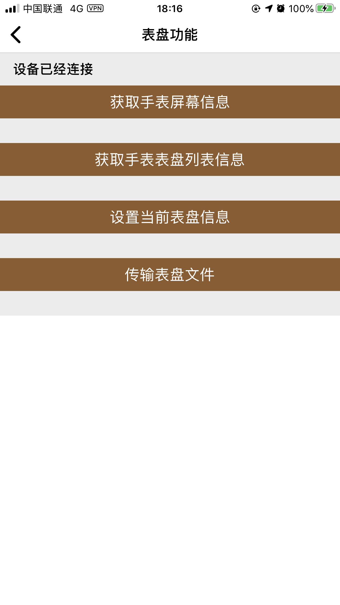

表盘设置功能
15.1功能概述
表盘功能主要有获取手表屏幕信息功能，获取表盘列表信息功能，设置当前表盘信息功能，传输表盘文件。
15.2 表盘操作属性
| 参数 | 说明 | 备注 |
|---|---|---|
| filePath | 表盘文件传输路径 | str |
| colorFormat | 颜色格式 | int 设备屏幕信息接口获取 |
| blockSize | 压缩块大小 | int 设备屏幕信息接口获取 |
15.3 获取屏幕信息
- IDOWatchScreenInfoModel
| 参数 | 说明 | 备注 |
|---|---|---|
| familyName | 表盘家族名称 | str |
| width | 宽度 | int |
| height | 高度 | int |
| colorFormat | 颜色格式 | int |
| size | 尺寸 * 100 | int |
| 参数 | 说明 | 备注 |
|---|---|---|
| fileName | 表盘名称 | str（唯一标示） |
| operate | 操作 | 0x00:查询正在使用表盘 0x01:设置表盘 0x02:删除表盘 |
- IDOWatchDialInfoModel
| 参数 | 说明 | 备注 |
|---|---|---|
| fileCount | 文件个数 | int |
| remainingSpace | 剩余空间 | int |
| fileMaxSize | 单个文件最大size | int |
| currentDialName | 当前设置的表盘名称 | str |
| dialArray | 当前手环所有表盘信息集合 | array |
| 参数 | 说明 | 备注 |
|---|---|---|
| fileName | 表盘名称 | str（唯一标示） |
| operate | 操作 | 0x00:查询正在使用表盘 0x01:设置表盘 0x02:删除表盘 |
Objc:
IDOWatchDialInfoItemModel * model = [[IDOWatchDialInfoItemModel alloc]init];
initWatchDialManager().setCurrentDial(^(int errorCode) {
if (errorCode == 0) {
//设置当前表盘成功
}else if (errorCode == 6) {
//不支持此功能
}else {
//设置当前表盘失败
}
}, model);
Swift:
let model = IDOWatchDialInfoItemModel.init()
initWatchDialManager().setCurrentDial!{(errorCode)in
if errorCode == 0{
//设置当前表盘成功
}else if errorCode == 6 {
//不支持此功能
}else {
//设置当前表盘失败
}
}(model)
15.6 获取V3表盘列表
//获取v3表盘列表功能表
__IDO_FUNCTABLE__.funcTable35Model.getNewWatchList
- IDOV3WatchDialInfoModel
| 参数 | 说明 | 备注 |
|---|---|---|
| localWatchNum | 本地表盘的总个数 | int |
| cloudWatchNum | 云端表盘的总个数 | int |
| wallpaperWatchNum | 壁纸表盘的总个数 | int |
| useCloudWatchNum | 云端表盘的已经使用个数 | int |
| useWallpaperWatchNum | 壁纸表盘的已经使用个数 | int |
| currentWatchName | 当前设置的表盘名称 | int |
| watchFrameVersion | 框架版本号 从1开始 | int |
| fileMaxSize | 单个文件最大 | KB |
| watchListNum | 当前手表所有表盘数量 | int |
| watchTotalSize | 表盘的总容量 | 单位：字节 |
| watchUsedSize | 表盘的已经使用容量 | 单位：字节 |
| maxDownloadSpaceSize | 最大的可用表盘下载连续空间大小 | 单位：字节 |
| dialArray | 当前手表所有表盘信息 | IDOV3WatchDialInfoItemModel 集合 |
- IDOV3WatchDialInfoItemModel
| 参数 | 说明 | 备注 |
|---|---|---|
| type | 表盘类型 | 1：普通表盘； 2：壁纸表盘； 3：云表盘 |
| watchVersion | 表盘版本号 | 云表盘起作用 |
| sortNumber | 表盘排列序号 | int 从0开始 |
| size | 表盘文件大小 | int |
Objc:
initWatchDialManager().getV3WatchListInfo(^(IDOV3WatchDialInfoModel * _Nullable model, int errorCode) {
if (errorCode == 0) {
//获取v3表盘列表信息成功
}else if (errorCode == 6) {
//不支持此功能
}else {
//获取v3表盘列表信息失败
}
});
Swift:
initWatchDialManager().getV3WatchListInfo!((mode,errorCode)in {
if errorCode == 0{
//获取v3表盘列表信息成功
}else if errorCode == 6 {
//不支持此功能
}else {
//获取v3表盘列表信息失败
}
})
15.7 设置表盘排序
//设置表盘排序功能表
__IDO_FUNCTABLE__.funcTable34Model.watchDialSort
- IDOV3WatchDialInfoModel
| 参数 | 说明 | 备注 |
|---|---|---|
| watchListNum | 当前手表所有表盘数量 | int |
| dialArray | 当前手表所有表盘信息 | IDOV3WatchDialInfoItemModel 集合 |
- IDOV3WatchDialInfoItemModel
| 参数 | 说明 | 备注 |
|---|---|---|
| type | 表盘类型 | 1：普通表盘； 2：壁纸表盘； 3：云表盘 |
| watchVersion | 表盘版本号 | 云表盘起作用 |
| sortNumber | 表盘排列序号 | int 从0开始 |
| size | 表盘文件大小 | int |
Objc:
IDOV3WatchDialInfoModel * dialModel = [IDOV3WatchDialInfoModel currentModel];
initWatchDialManager().setWatchDialSort(^(int errorCode) {
if (errorCode == 0) {
//设置表盘排序成功
}else if (errorCode == 6) {
//不支持此功能
}else {
//设置表盘排序失败
}
}, dialModel);
Swift:
initWatchDialManager().setWatchDialSort!((errorCode)in{
if errorCode == 0 {
//设置表盘排序成功
}else if errorCode == 6 {
//不支持此功能
}else {
//设置表盘排序失败
}
})
15.8表盘文件传输功能
Objc:
initWatchDialManager().colorFormat = model.colorFormat;
initWatchDialManager().blockSize = model.blockSize;
initWatchDialManager().addDialProgress(^(int progress) {
//表盘传输进度（0-100）
}).addDialTransfer(^(int errorCode,int finishingTime) {
if (errorCode == 0) {
//传输完成
}else if (errorCode == 6) {
//不支持传输
}else {
//传输失败
}
}).filePath = filePath;
[IDOWatchDialManager startDialTransfer];
Swift:
initWatchDialManager().colorFormat = model.colorFormat;
initWatchDialManager().blockSize = model.blockSize;
initWatchDialManager().addDialProgress!{(progress)in
//表盘传输进度（0-100）
}.addDialTransfer!{(errorCode,finishingTime)in
if errorCode == 0{
//传输完成
}else if errorCode == 6{
//不支持传输
}else {
//传输失败
}
}.filePath = filePath;
IDOWatchDialManager.startDialTransfer();
15.9 Demo表盘功能入口

